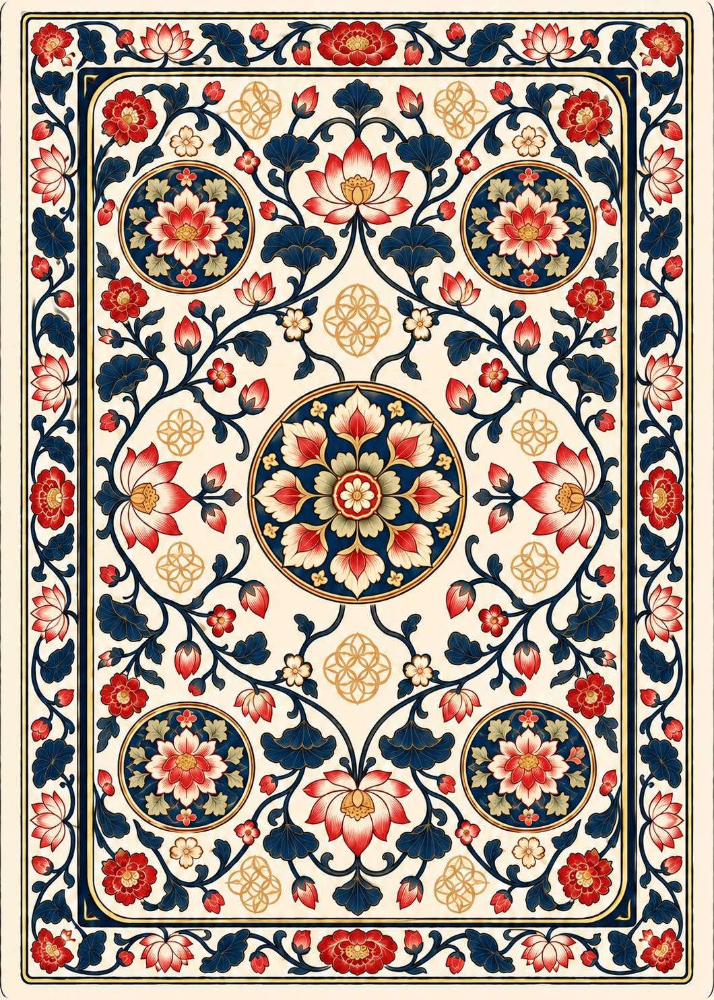
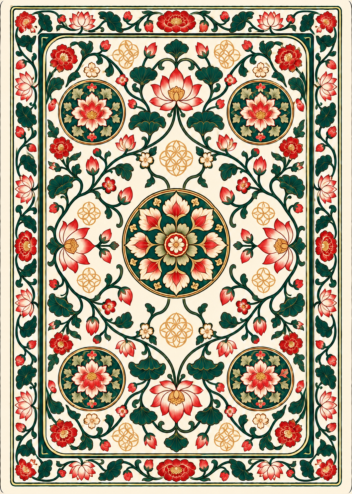
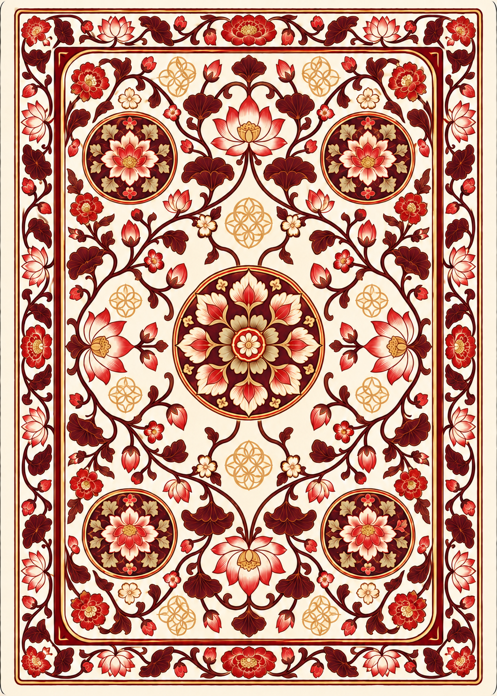
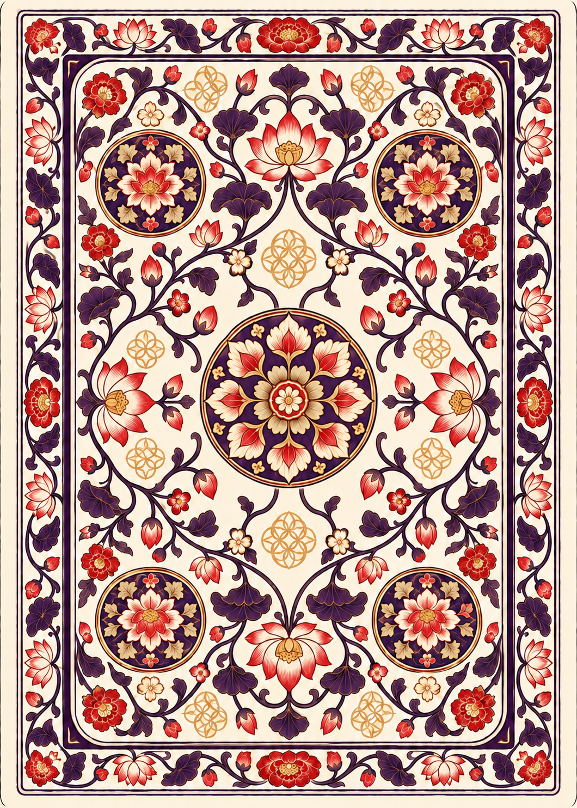
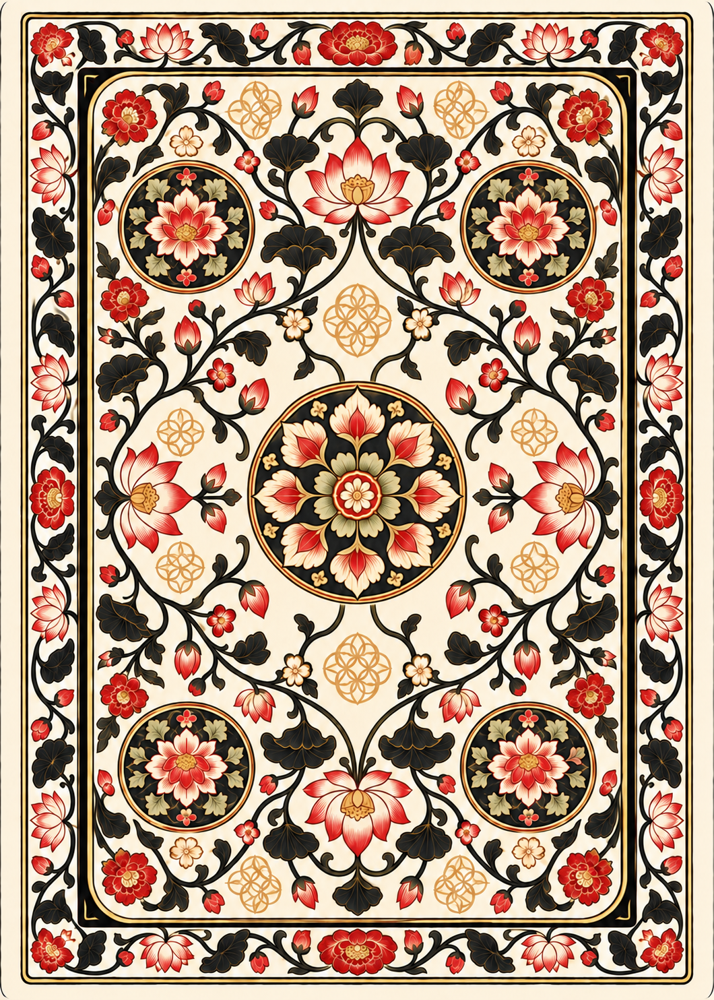

The selected silk pattern, with its circular floral center and current density. Red-and-ivory flowers and ochre ornament accompany five pigment-inspired palettes.





Generated color masters · 1060 × 1484 px · click a card for its PNG.
Exact half-turn symmetry, background RGB, trim dimensions and alpha corners are not yet production-normalized.
Generation prompts · FPlease stitch on these in a few erdesign catalon. ile checks